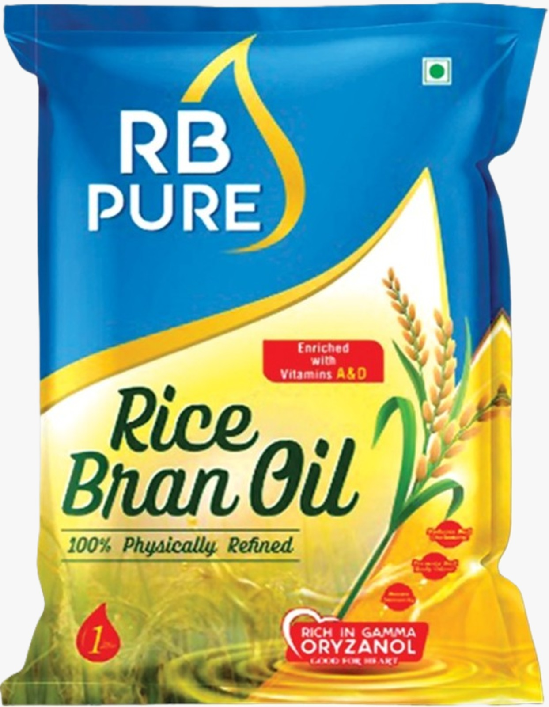
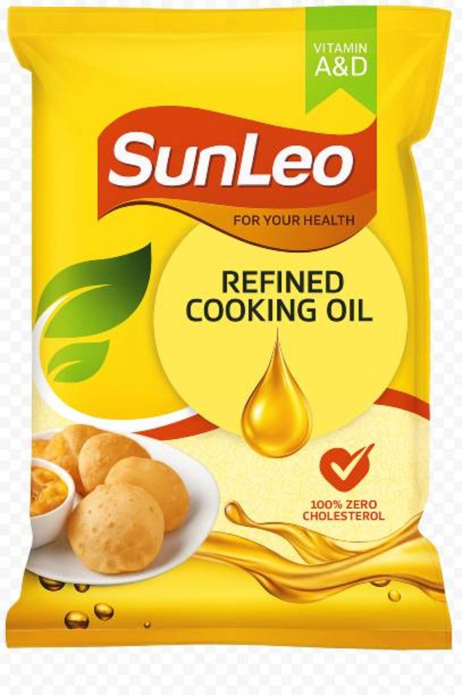
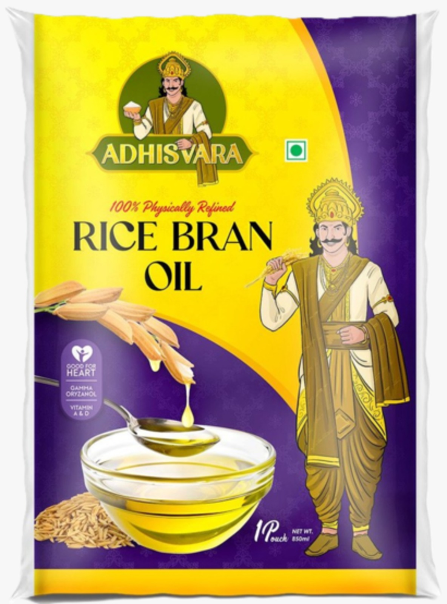
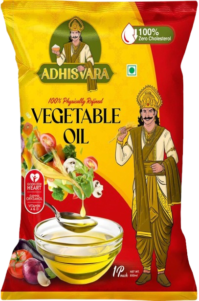

PRODUCTS
RB Refined Rice Bran Oil
Refined rice bran oil is a pale yellow, odorless, nutty-flavored oil that's extracted from the outer layer of rice.
- Appearance: Bright yellow in color, slightly oily to the touch, and absorbs quickly.
- Taste: Nutty flavor with a sweet taste.
- Nutritional value: Rich in vitamins and minerals, including tocopherols, tocotrienols, squalene, and γ-oryzanol.
- Health benefits: May improve blood cholesterol levels and decrease the risk of heart disease and Type 2 diabetes
- Uses: Suitable for high-temperature cooking methods like deep-frying and stir frying, and can also be used in cosmetics and pharmaceuticals.
- Other properties: Has a high smoke point, is free from trans-fat, and is compatible with all skin types
Rice bran oil is obtained from the bran, a by-product of the rice bran milling process. The oil content of the bran ranges from 10–16%.
|  |  |
|  |  |

SLS Aaradhya Deepam Oil
SLS Aaradhya Deepam oil is a sacred oil used in rituals, festivals, and daily prayers:
- Purpose: Deepam oil is used to light lamps to create a positive environment, purify spaces, and worship deities. It is also a symbol of prosperity, luck, and well-being.
- Properties: Deepam oil is made from premium ingredients, it burns cleanly and consistently, ensuring a pure, bright flame that lasts through your prayers and ceremonies. Each bottle is infused with a gentle, soothing fragrance that enhances the spiritual ambiance, bringing a sense of calm and devotion to your sacred spaces.
- Significance: In ancient traditions, Pancha Deepam oils are believed to eliminate negativity and bring peace, happiness, and positivity.
Premium Quality DORB
De-oiled Rice Bran (DORB) is derived when crude oil is extracted from rice bran. DORB is commonly used in the production of animal nutrition products catering to cattle, poultry, horse, pet care, aquaculture (aquafeed), and swine industries. Is high in vitamin B and goes well for agricultural animals.
Specifications
- Protein: 16%
- Fat: 1%
- Fiber:12%
- Sand Silica:4%
- Moisture: 10% Max
Rice Bran Fatty Acid
Rice bran oil contains a variety of fatty acids, including:
- Oleic acid:A monounsaturated fatty acid (MUFA) that makes up 37–52% of rice bran oil.
- Linoleic acid: A polyunsaturated fatty acid (PUFA) that makes up 27–40% of rice bran oil
- Palmitic acid: A saturated fatty acid (SFA) that makes up 13–22% of rice bran oil
- Myristic acid: A SFA found in rice bran oil
- Stearic acid: A SFA found in rice bran oil
- α-Linolenic acid: A PUFA found in rice bran oil
Rice Bran Wax
Rice bran wax is a natural wax that comes from rice bran, a by-product of rice oil production. It has many industrial uses, including in cosmetics, food, and as a polisher:
- Cosmetics:Rice bran wax is a common ingredient in cosmetics like lipstick, lip balm, mascara, sunscreen, and creams. It's also used as a thickener, binding agent, and gelling agent. Rice bran wax is compatible with other waxes, natural oils, mineral waxes, and petrolatum.
- Food:Rice bran wax can be used in food applications.
- Polisher:Rice bran wax can be used as a polisher.
Rice Bran Gums
Rice bran gums (RBG) are a waste product of the rice bran oil refining industry, but they can be used in a variety of ways:
- Composition:RBG is made up of phospholipids, glycolipids, oil, bran fines, mucilages, and other foreign particles.
- Uses:RBG can be used to make commercial gums and is a source of natural phospholipids. The demand for phospholipids has increased, especially for use in COVID-19 vaccines.
- Production:RBG can be produced by fermenting rice bran waste to produce gellan gum
- Bleaching: RBG needs to be bleached before further processing, which can be done with hydrogen peroxide, benzoyl peroxide, or sodium chlorite.
- Environmental impact:Rice bran can be used in ways that benefit the environment and the economy
Spent Earth
Spent bleaching earth (SBE) is a solid waste byproduct of the vegetable oil refining process. It's made up of residual oil and montmorillonitic clay, and is typically disposed of in landfills. However, due to environmental concerns and the cost of disposal, there are several methods for reusing or regenerating SBE, including:
- Solvent extraction:A process that can recover oil from SBE.
- Thermal treatment:A method for regenerating SBE.
- Chemical treatment:A method for regenerating SBE.
- Combination of methods:A method for regenerating SBE.
SBE is a fire risk and a source of environmental hazards because of its high oil content. The oil in SBE can rapidly oxidize when exposed to air, generating enough heat to cause spontaneous combustion